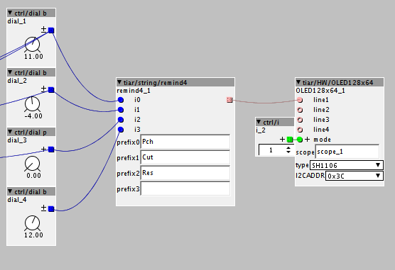

Good work!-------
a|x

Don't be afraid of Aliexpress: they are all the same quality. I bought some from Ali and they are all good.
Smashed Transistors,
this looks great. If I want to use your objects, exactly what kinds of displays can i buy, i.e. what features/numbers/names am i looking for (never worked with displays before, there weren't any when i got my soldering license...)?
And: Which pins do you connect them to?
Thanks in advance for your help!
Hi @Captain_Burek,
see http://community.axoloti.com/t/official-pin-out-ports-documentation/202/5
Axo Display
PB8 connects to SCL
PB9 connects to SDA
VDD connects to VCC
GND connects to GNDI added two 10k pull up resistors from PB8 and PB9 to VDD
I used these displays:
and
https://www.amazon.com/gp/product/B01N2K3BC9
but it should work with other 128x64 OLED displays based on controllers SH1106 or SSD1306
Thanks for the quick response, SmashedTransistors!
Got one OLED working just as planned, 2nd one's in the mail. Much obliged!
Just added my first screen on one of my axo-boxes, and thanks to @SmashedTransistors it all worked first time and is still amazing me  This opens up a whole new world, and one of them is to be able to forget things and have interactive reminders, so cool
This opens up a whole new world, and one of them is to be able to forget things and have interactive reminders, so cool
I think the performance of the objects, CPU and memory wise is very small, but if you want to use it to show a lot of information, some quite complicated patching needs to be involved, so that may take up a bit.
I will be testing it a bit more this week, but I really don't think it will get in my way CPU wise
Hi @mtyas,
I really like your idea of a "reminder" object !
I'm experimenting with this idea.
I added an object (tiar/string/remind4 see help patch as usual... ).
It is still in development and all inputs are welcome.
It has 4 inputs and one string output that takes 5 character prefix + input value.
The output value and prefix correspond to the latest inlet that changed by more than 1 unit.
This way, the first line of the OLED can be used as a reminder while the rest is in scope mode.

Thanks so much for this, so much better and easier than my solution :
I can even have 16 different labels in the first mode (4 per line).
I quickly looked into your code, will it be simple for me to convert your object to a 8 or 16 input version ? I really like the idea of always having the scope on screen.
Anyway, bravo again for all this, it sure changes the way I look at my axoloti boxes now.
Oh, btw, what kind of characters can this display show ? Is there a caracter map sheet or something ? I'm thinking about doing some old school ascii art using the 4 lines, that I can flash to say thanks when people give me the thumbs up when I'm playing in the street, or other silly things like that.
Maybe, chainable objects would be more versatile than big objects.
Something like:
I think it is quite easy to use and versatile.
The character font is in
\objects\tiar\HW\tiar_font5x8.h
I designed it loosely based on the ZX Spectrum font and reduced it to 5x8 so that its RAM footprint is as small as possible.
When it is displayed on the OLED it is scaled by 2 (thus 10x16) and a 1 pixel space is added to separate characters (thus 11x16). I avoided to use double buffering to keep the RAM footprint as small as possible, that's why the code of my OLED objects can be a little tricky and limited.
I think that if you want better graphics the best idea is to use an arduino uno or due with a nice TFT touch screen from Adafruit or Sparkfun (so that you benefit a functional driver code) and communicate with the Axoloti thru midi or serial.
Hi, @Cannonball,
Sorry, concerning my OLED object, the answer is no.
The code I made for my I2C OLED objects is quite specific and RAM optimised (no buffering).
Of course, it would be possible to make some more evolved objects but, as i stated above, I think that using an arduino with its existing graphic adafruit libraries is a more interesting solution for more advanced graphics.
Thanks for the info. I also have another question I have an sh1106 with 7 inputs (Gnd-vdd-sdk-sda-res-dc—cs), i tired hooking it up and using it with your object with pb8 to sdk but got nothing. I’m guessing I need the exact pin count as showin in the post?
Here is how I connected the I2C display:
Maybe there is a way to switch your display from SPI to I2C, sometimes, you have to add straps or remove resistors to do so. Do you have any documents about your display ?
Seems to be able to do both....., resolution: 128X64
2, super wide viewing angle: more than 160 ° (maximum viewing angle display a screen)
3, ultra-low power consumption: normal display 0.08W (far below the TFT display)
4, wide supply range: DC 3V-5V (without any changes, directly compatible with common 3.3V and 5V power supply system)
5, industrial grade: Operating temperature range -30 degree~ 70 degree
6, the ultra-small size: (length) 35.4MM * (W) 33.5MM * (thickness) 4.3MM
7, support for multiple operating modes: 3-wire SPI, 4 wire SPI, IIC
8, with chip select CS signal, you can achieve multiple SPI or IIC device on the same bus work
9, compatible with 3.3V and 5V control chip I / O level (without any set, directly compatible)
Pins:Pin Description:
GND: Power ground
VCC: 3.3V or 5V power supply
D0: CLK Clock
D1: MOSI data
RST: Reset
DC: data / command
CS: Chip select signal
I really like the wide viewing angle of OLEDs compared to TFTs.
I meant, besides the specs, do you have info about how to change it from SPI to I2C operation ? And what pins are SCL and SDA once it is in I2C mode ?